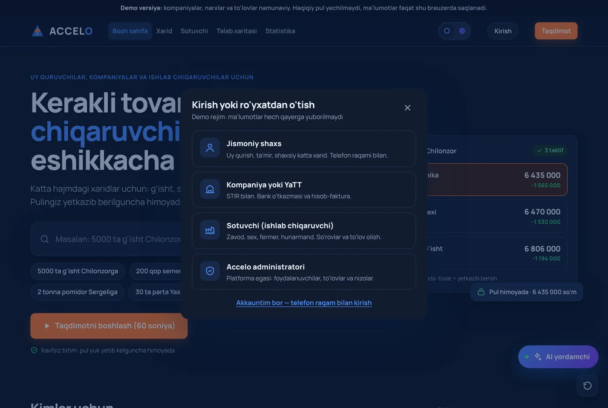
01 · Ro'yxatdan o'tish
4 xil rol, telefon + SMS kod
Jismoniy shaxs, kompaniya (STIR bilan), sotuvchi (3 bosqichli tekshiruv) va administrator. Qaytib kirish — telefon raqam bilan.
Pitch Day 3.0 · Accelo
G'isht, sement, mahsulot yoki xom ashyoni katta hajmda olish kerakmi? Bitta so'rov yozasiz — mos ishlab chiqaruvchilar taklif beradi, har biri yetkazib berish bilan yakuniy narxda. Pul yuk qabul qilinguncha himoyada turadi.
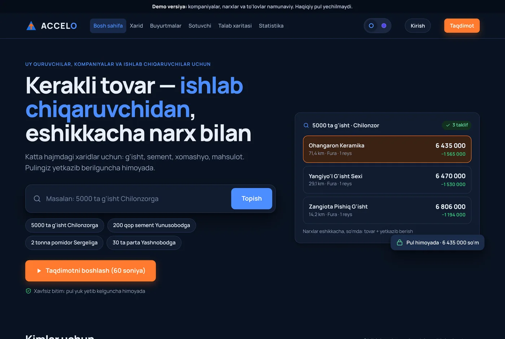
1 · Muammo
Bugun katta hajmdagi xarid shunday ko'rinadi (misol hikoya):
1-kun
Telegram guruhlar va tanishlardan so'raydi
2–3-kun
O'nlab zavodga qo'ng'iroq, har birida boshqa narx
4-kun
Mashina alohida kelishiladi, summa oshib ketadi
5-kun
Pulni oldindan beradi, hech qanday kafolatsiz
7-kun
Yuk keldi, bir qismi singan. Endi kimga aytadi?
Bir hafta vaqt, noaniq narx va xavf. Ishlab chiqaruvchi tomonda ham xuddi shunday: xaridor topish uchun bozorda turadi, reklamaga va vositachiga pul beradi.
7 ta muammo
Xaridor
01
Kim sotadi, qayerda, qancha — noma'lum
02
Yetkazish narxi faqat oxirida bilinadi
03
Oldindan to'lov, hech qanday kafolat yo'q
04
Mashinani alohida izlash va kelishish
Ishlab chiqaruvchi
05
Bozor, reklama va vositachi ulushi
06
Qayerda nima kerakligini bilmaydi
07
Pul kutiladi, xom ashyoga qarz olinadi
Natija
1 · Muammo → Yechim
Xaridor bir joyda so'raydi, solishtiradi, to'laydi va kuzatadi. Ishlab chiqaruvchi so'rovni o'zi oladi va pulini kafolatli oladi.
Jismoniy shaxs yoki kompaniya
So'rov · narx · to'lov · yetkazish
Zavod, sex, fermer, hunarmand
Litsenziyali — pul qabulgacha himoyada
Hamkor logistika — eng arzon mos mashina
01
Muammo
Xaridor tomoni
Kunlar ketadi, narx baribir noaniq.
Yechim
Oddiy tilda yozasiz: «5000 ta g'isht Chilonzorga». Tizim mahsulot, miqdor va manzilni tushunadi va 200 km ichidagi mos ishlab chiqaruvchilarga signal yuboradi.
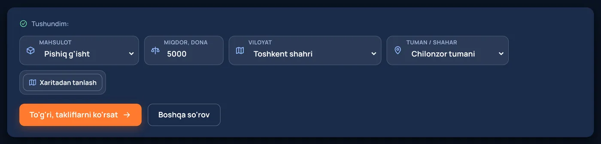
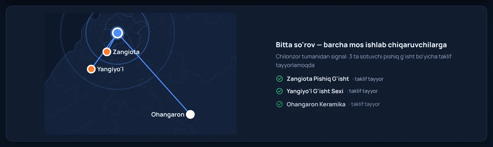
02
Muammo
Xaridor tomoni
Haqiqiy xarajat yuk kelgandagina bilinadi.
Yechim
Tizim masofa va yuk hajmiga mos mashinani (Damas → Fura) o'zi hisoblaydi: tovar va yetkazish bitta summada ko'rinadi.
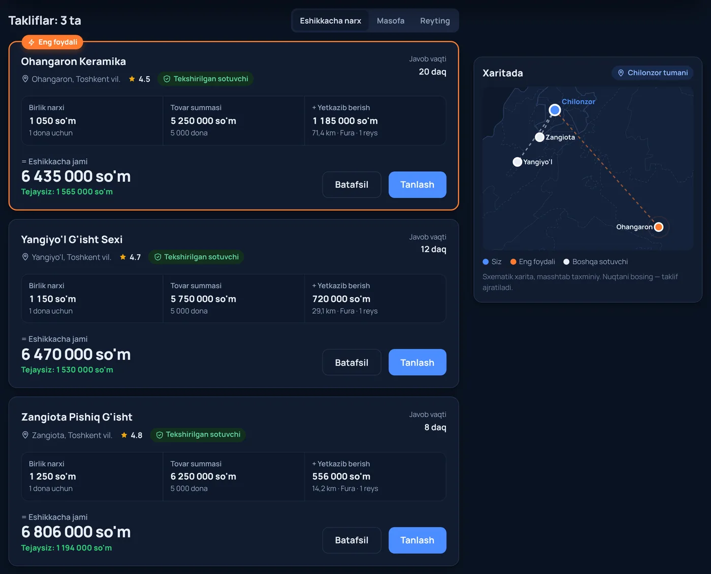
Prototipdagi demo hisob-kitob
03
Muammo
Ikki tomon
Ishonch yo'q — bitim sekinlashadi.
Yechim
To'lov litsenziyali bank hamkorda saqlanadi. Xaridor qabulni tasdiqlagach, pul avtomatik taqsimlanadi: sotuvchiga, logistikaga va Accelo komissiyasiga. Muammo bo'lsa — nizo ochiladi.
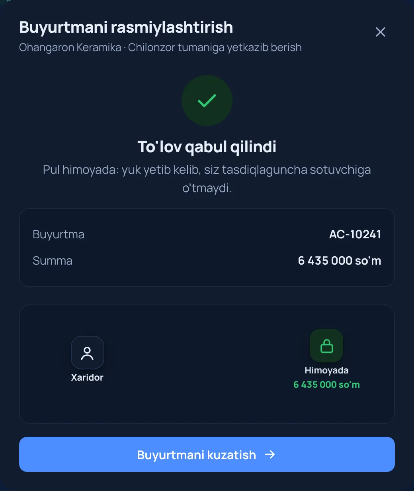
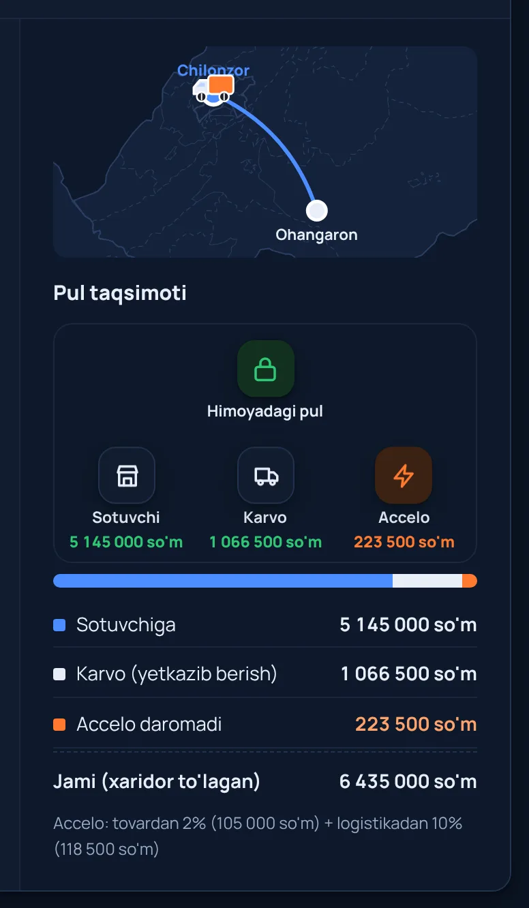
04
Muammo
Xaridor tomoni
Logistika tejalgan pulni yeb qo'yadi.
Yechim
Hamkor logistika (Karvo, Yandex) orqali yuk hajmiga eng arzon mashina tanlanadi: Damas 800 kg, Isuzu 5 t, KamAZ 15 t, Fura 20 t. Har bir bosqich ikki tomonga ham ko'rinadi.
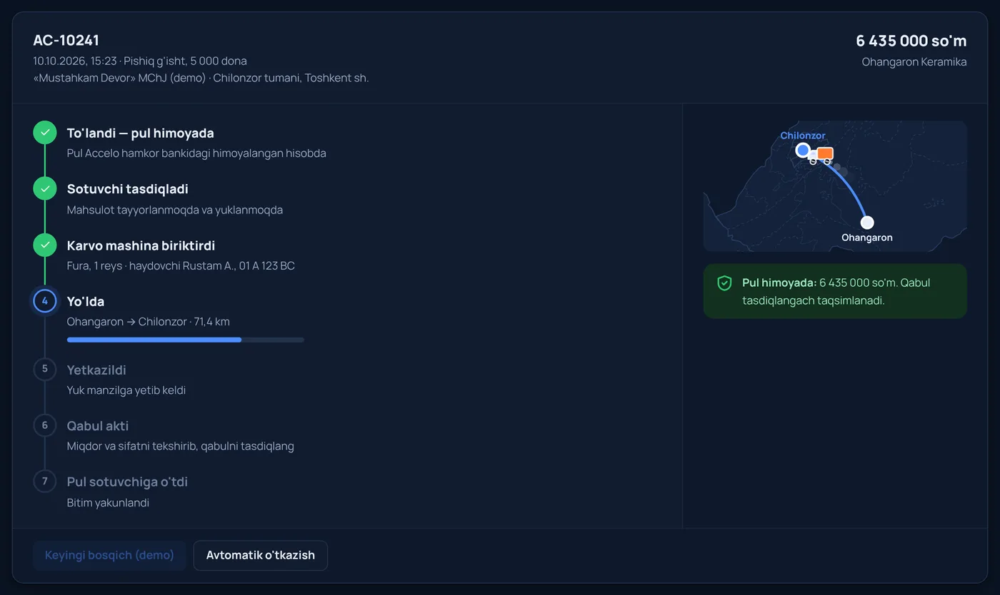
05
Muammo
Ishlab chiqaruvchi tomoni
Zavod ishlab chiqarish o'rniga savdo bilan band.
Yechim
Sotuvchi kabinetida mos so'rovlar ro'yxati: bir tugma bilan taklif beriladi. Reklama va obuna to'lovi yo'q — komissiya faqat yakunlangan bitimdan 2%.
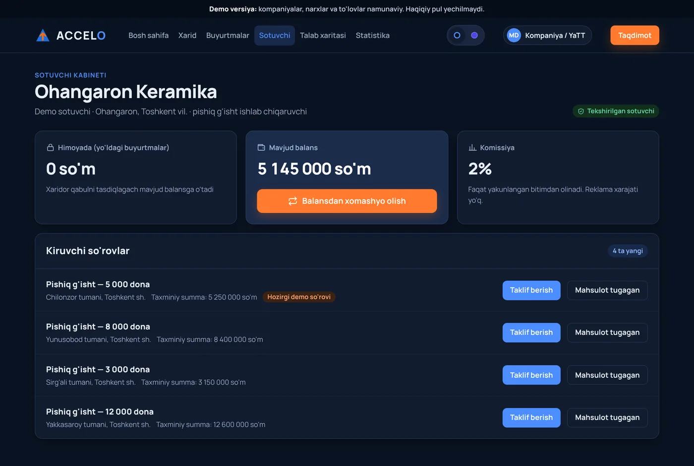
06
Muammo
Ishlab chiqaruvchi tomoni
Bozorda bo'shliq bor, lekin uni hech kim ko'rmaydi.
Yechim
Har bir javobsiz so'rov xaritaga tushadi — 14 hudud va tumanlar kesimida. Ishlab chiqaruvchi qayerda nima kerakligini ko'radi, yangi biznes sexni ma'lumot asosida ochadi.
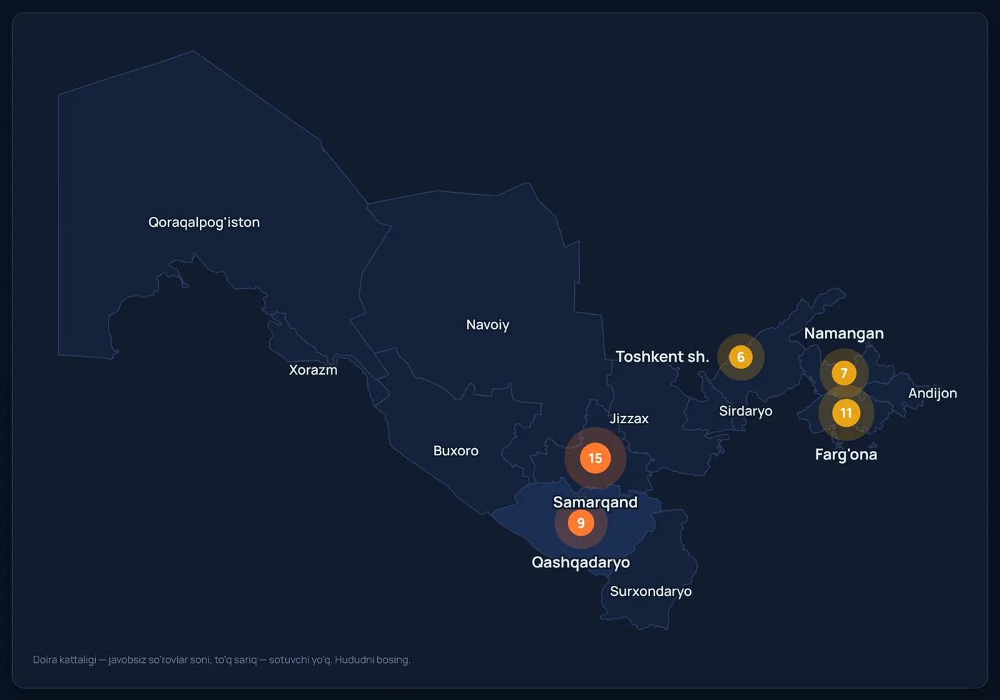
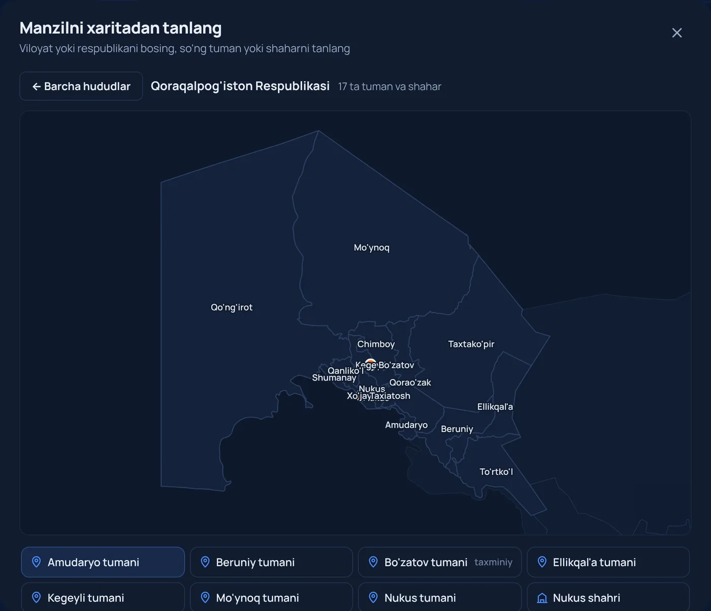
07
Muammo
Ishlab chiqaruvchi tomoni
Ishlab chiqarish to'xtab-to'xtab ishlaydi.
Yechim
Bitim yakunlangach pul sotuvchining balansiga tushadi va u shu pul bilan platformadagi ta'minotchidan xom ashyo oladi. Bitta pul ikki marta ishlaydi, Accelo ikkala bitimdan komissiya oladi.
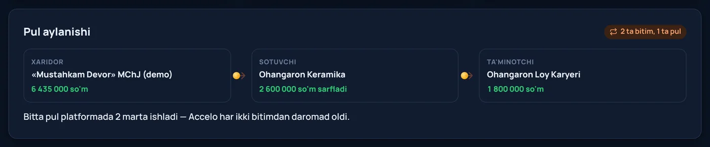
Prototipda ishlaydi
Hammasini prototipda o'zingiz sinab ko'rishingiz mumkin. Akkauntlar, buyurtmalar va cheklar brauzerda saqlanadi — sahifani yangilasangiz ham yo'qolmaydi.

01 · Ro'yxatdan o'tish
Jismoniy shaxs, kompaniya (STIR bilan), sotuvchi (3 bosqichli tekshiruv) va administrator. Qaytib kirish — telefon raqam bilan.
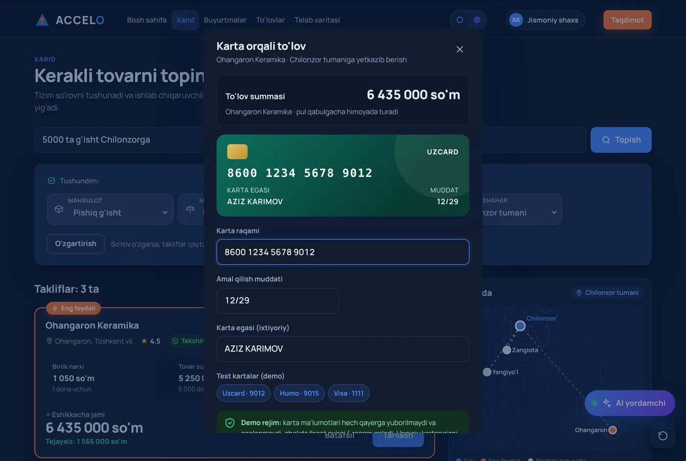
02 · Karta orqali to'lov
Raqam tekshiriladi (Luhn algoritmi), karta turi aniqlanadi, muddat tekshiriladi, SMS kod bilan tasdiqlanadi. Kompaniyalar — bank o'tkazmasi va hisob-faktura.
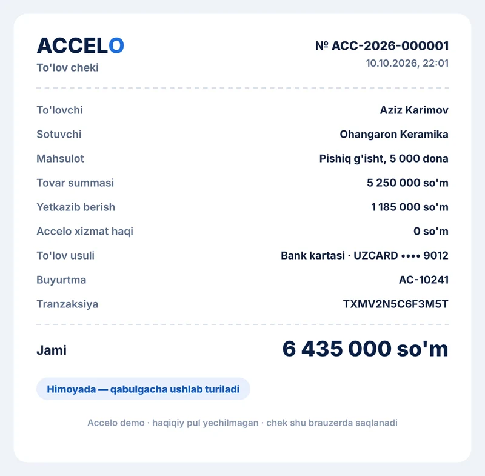
03 · Chek
Chek avtomatik yaratiladi va saqlanadi: raqami, tranzaksiya ID, karta oxirgi 4 raqami, holati (himoyada → yakunlandi). Bir tugma bilan yuklab olinadi.
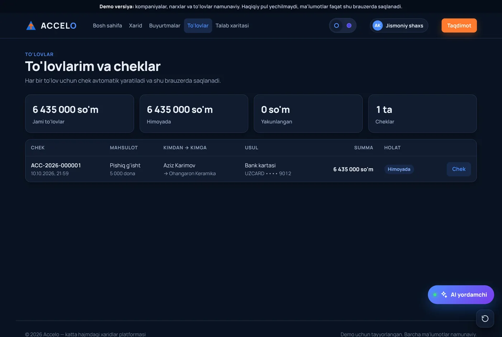
04 · To'lovlar tarixi
Jami to'lovlar, himoyadagi va yakunlangan summa. Karta raqamining o'zi saqlanmaydi — faqat oxirgi 4 raqam.
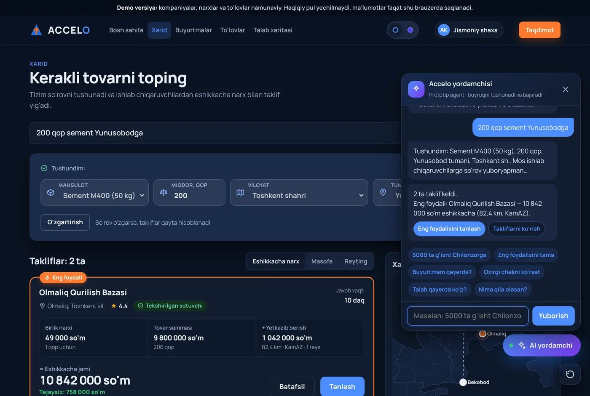
05 · AI yordamchi
«5000 ta g'isht Chilonzorga» desangiz — takliflarni yig'adi, eng foydalisini topadi, rasmiylashtirishni ochadi. Buyurtma holati, chek, talab tahlili.
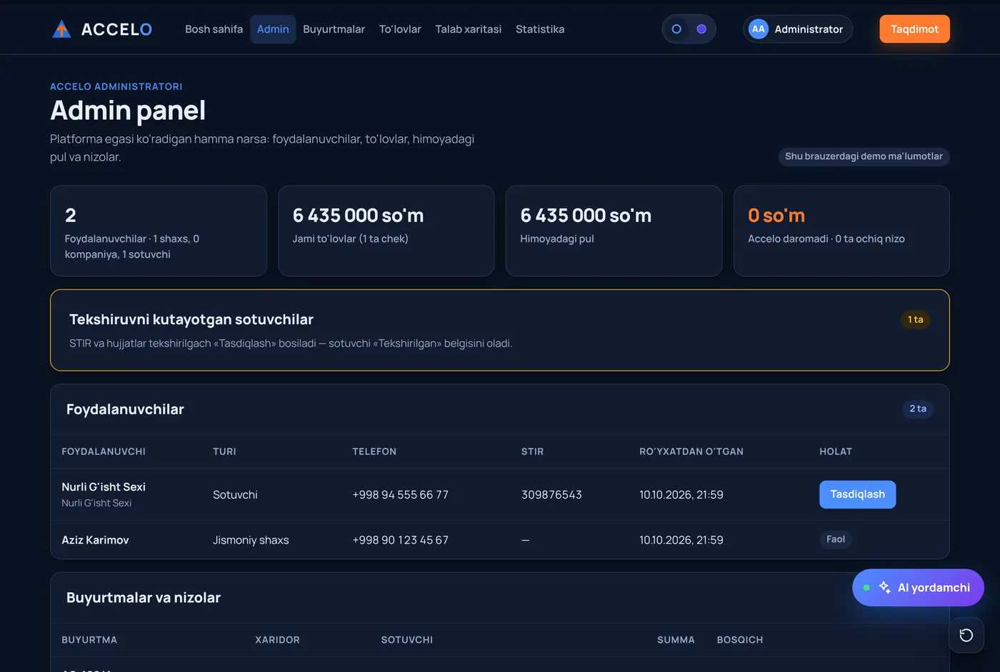
06 · Admin panel
Barcha foydalanuvchilar, sotuvchilarni tasdiqlash, barcha to'lovlar va cheklar, himoyadagi pul, nizolarni hal qilish.
Kimga nima ko'rinadi
| Bo'lim | Mehmon | Jismoniy shaxs | Kompaniya / YaTT | Sotuvchi | Administrator |
|---|---|---|---|---|---|
| Qidiruv va takliflar | Ha | Ha | Ha | — | — |
| To'lov usuli | Kirish so'raladi | Karta, naqd | Bank o'tkazmasi, karta, naqd | — | — |
| Buyurtmalar | — | O'ziniki | O'ziniki | Kiruvchi so'rovlar | Hammasi |
| To'lovlar va cheklar | — | O'ziniki | O'ziniki (STIR bilan) | Tushum va xarajatlar | Hammasi |
| Balans va pul aylanishi | — | — | — | Ha | Himoyadagi pul |
| Tasdiqlash va nizolar | — | Nizo ochadi | Nizo ochadi | Tekshiruvdan o'tadi | Tasdiqlaydi, hal qiladi |
Natija
| Muammo | Bugun | Accelo bilan |
|---|---|---|
| Qidiruv | O'nlab qo'ng'iroq, kunlar ketadi | Bitta so'rov, takliflar o'zi keladi |
| Yakuniy narx | Yetkazish oxirida bilinadi | Eshikkacha narx darhol ko'rinadi |
| To'lov | Oldindan, kafolatsiz | Qabulgacha himoyada |
| Logistika | Mashinani o'zing izlaysan | Mos mashina avtomatik, jonli kuzatuv |
| Xaridor topish | Bozor, reklama, vositachi | So'rov o'zi keladi, 2% faqat bitimdan |
| Talab | Ko'rinmaydi | Talab xaritasi, 14 hudud |
| Aylanma pul | Bitimdan keyin chiqib ketadi | Platforma ichida aylanadi |
2 · Jamoa
CEO · Pitch va strategiya
G'oya, bozor va biznes model. Hakam va investorlar bilan muloqot, moliya rejasi.
CTO · Texnologiya
Python dasturchi, dasturiy injiniring talabasi. Prototip, arxitektura va MVP'ni qurish uchun javobgar.
COO · Hamkorlik va sotuv
Ishlab chiqaruvchilar bilan uchrashuv, kelishuv xatlari, logistika va to'lov hamkorlari, marketing.
3 · Nima uchun aynan biz
Biz g'oya bilan cheklanmadik: so'rovdan to'lov va yetkazishgacha bo'lgan butun jarayon ishlaydigan prototipda ko'rinadi, avtotestlar bilan tekshirilgan.
CTO real loyihalarda Python, Flask, PostgreSQL va API integratsiyalari bilan ishlaydi — MVP'ni tashqi pudratchisiz o'zimiz quramiz.
[Jamoa a'zosining qurilish / agro / savdo sohasidagi tajribasi — 1–2 jumla]
Biznes (CEO), texnologiya (CTO) va hamkorlar bilan ish (COO) — har bir yo'nalishga alohida javobgar bor.
4 · Yo'l xaritasi
Hozir biz Prototype bosqichidamiz.
Sentabr 2026
Oktabr 2026
0–3 oy
6–12 oy
5 · Qanday amalga oshiramiz
1
30 ta ishlab chiqaruvchi bilan kelishuv. So'rovlarni operator qabul qiladi — talabni tasdiqlaymiz.
2
Flask API, PostgreSQL: so'rov, taklif, buyurtma, sotuvchi kabineti, eshikkacha narx hisobi.
3
Bank hamkor bilan himoyalangan to'lov, Karvo / Yandex API orqali yetkazish.
4
Talab xaritasi asosida yangi soha va viloyatlar, mobil ilova.
Python, Flask, REST API
CTO'ning asosiy stekPostgreSQL
Buyurtmalar, sotuvchilar, talab statistikasiVeb-ilova (telefonda ham ishlaydi), keyin mobil ilova
Prototip HTML/JS'da tayyorOpenStreetMap ma'lumotlari, yo'l masofasi hisobi
Prototipda: 14 hudud va tumanlarLitsenziyali bank hamkor (escrow), karta va bank o'tkazmasi
Hamkor bilan muzokara — MVP bosqichidaKarvo / Yandex Delivery API, SMS tasdiqlash
Hosting: GitHub + Railway6 · Investitsiyadan keyin
Bugun prototipda bitta yordamchi bor. Investitsiyadan keyin har bir jarayonni alohida AI agent bajaradi — pul va imzo esa doim inson tasdig'i bilan.
0–3 oy
Matn, ovoz yoki rasmdan so'rovni tushunadi, takliflarni solishtiradi, sotuvchi bilan narx bo'yicha kelishadi va xaridorga tayyor tanlov beradi.
0–3 oy
24/7 o'zbek va rus tilida: buyurtma holati, to'lov, qaytarish savollari. Murakkab holat — operatorga.
3–6 oy
Kelgan so'rovga qoldiq, bozor narxi va masofaga qarab narx taklifini tayyorlaydi. Sotuvchi bitta tugma bilan yuboradi.
3–6 oy
Hisob-faktura, shartnoma, dalolatnoma va cheklarni avtomatik tayyorlaydi, buxgalteriyaga eksport qiladi.
6–12 oy
Bir yo'nalishdagi buyurtmalarni bitta mashinaga birlashtiradi, marshrut tuzadi, Karvo/Yandex'da bron qiladi.
6–12 oy
Javobsiz so'rovlar va mavsumiylikdan qaysi hududda nima kerak bo'lishini oldindan aytadi — tadbirkorlarga tayyor bozor signali.
6–12 oy
Firibgarlik belgilarini aniqlaydi, sotuvchi reytingini hisoblaydi, nizoda rasm va aktlarni tahlil qilib moderatorga tavsiya beradi.
Qoida
Agent tavsiya qiladi va tayyorlaydi. Pul o'tkazish, shartnoma imzolash va nizo qarori — faqat inson tasdig'i bilan.
Demo-videoni ko'ring yoki prototipni o'zingiz sinab ko'ring: so'rov yozing, takliflarni solishtiring va bitim qanday yakunlanishini ko'ring.